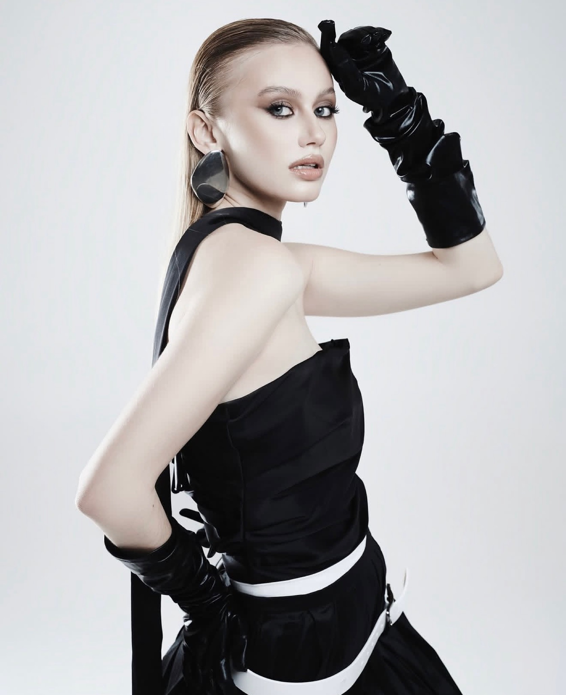

← Назад к услугам

Стилизация съёмок
Сильный кадр начинается с идеи. А детали превращают её в историю.
Работа начинается с обсуждения концепции, настроения, референсов и задач съёмки.
На основе идеи я разрабатываю стилистическое решение: подбираю одежду, обувь, аксессуары и детали, которые формируют нужный визуальный образ.
Мне важно не просто красиво одеть модель, а создать цельную историю, в которой каждый элемент работает на общую концепцию.
Во время съёмки я контролирую образы в кадре, посадку вещей и детали, от которых зависит финальный результат.
Результат
Визуально сильные образы, которые раскрывают идею съёмки и помогают получить запоминающиеся кадры.
Стоимость
Рассчитывается индивидуально в зависимости от количества образов и задач проекта.
Обсудить съёмку